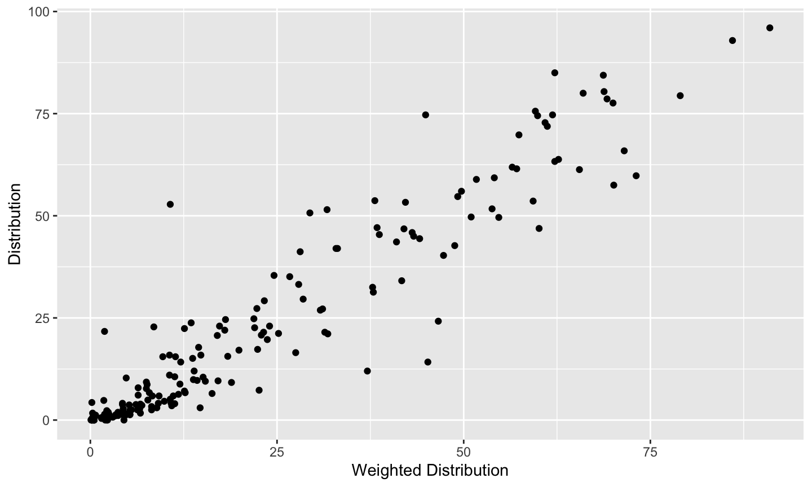

COVID-19 rapidly infected people across the US
COVID-19 Data
- Infection rates (epidemiology)
- Basic science data (sequencing, molecular biology, drug lead)
- Translational data (pre-clinical, Phase 1, Phase 2)
- Clinical data (Chest CT)
- Literature (pre-print and peer reviewed)
Rapid emergence generated several healthcare decision-making challenges
Volume
- Rapid data collection & storage allowed access to huge amounts of medical information
Ubiquity
- Data became available anywhere across geography, social, and economic classes
Latency
- Technology facilitates no delay in access to data
How do you make sense of COVID-19 data to make better health care decisions?
Data-driven decision making!

Emerging field of Data Science
 http://drewconway.com/zia/2013/3/26/the-data-science-venn-diagram
http://drewconway.com/zia/2013/3/26/the-data-science-venn-diagram
Venn Diagram of Data Science v2.0
 Joel Grus via KDnuggets
Joel Grus via KDnuggets
Overall goal is Knowledge Generation
Several Approaches to Knowledge Generation
- New tools allow data interrogation more easily than ever before
World’s most popular programming languages

Your choice in programming language
Data scientists and programmers have strong opinions about the differences in languages
The focus here will be on the R programming language
R
language
Any questions?
R is a language

R has values
- 1
- “North Carolina”
- “2020-04-08”
R has objects
- A name without quotes
- Assigned using
<-(looks like an arrow pointing left) - Can be a value, object, or function result
Try assigning an object
Assign an object; remember, no quotes on name
name <- 4Return that object by typing its name
name
Try this in the code chunk below, then hit “Run Code”
R has functions
- A name without quotes
- Followed by () to run the function
- Optional arguements: values, objects, or function results
round(x, digits = 3)
Try this in the code chunk below, then hit “Run Code”
round(pi, digits = 3)
Which of these are numbers?
Which of these will work?
Suppose one <- 1
one <- 1
Data are stored in tables and dataframes
Data stored in a dataframe are conceptually equivalent to a spreadsheet with rows and columns
This is a sample from the cdc dataset
| State | Ethnicity | Distribution | Weighted Distribution | row_id |
|---|---|---|---|---|
| United States | Non-Hispanic White | 53.3 | 42.2 | 1 |
| United States | Non-Hispanic Black or African American | 23.0 | 17.3 | 2 |
| United States | Non-Hispanic American Indian or Alaska Native | 0.6 | 0.3 | 3 |
| United States | Non-Hispanic Asian | 5.1 | 10.7 | 4 |
| United States | Hispanic or Latino | 16.5 | 27.5 | 5 |
Data are stored in tables and dataframes
Data stored in a dataframe are conceptually equivalent to a spreadsheet with rows and columns
This is a sample from the cdc dataset
## # A tibble: 5 x 5 ## State Ethnicity Distribution `Weighted Distribution` row_id ## <chr> <chr> <dbl> <dbl> <int> ## 1 United States Non-Hispanic White 53.3 42.2 1 ## 2 United States Non-Hispanic Black or African American 23 17.3 2 ## 3 United States Non-Hispanic American Indian or Alaska Native 0.6 0.3 3 ## 4 United States Non-Hispanic Asian 5.1 10.7 4 ## 5 United States Hispanic or Latino 16.5 27.5 5
Extract or create new objects
You can call a single part of the data frame
cdc$Distribution
## # A tibble: 185 x 1 ## Distribution ## <dbl> ## 1 53.3 ## 2 23 ## 3 0.6 ## 4 5.1 ## 5 16.5 ## 6 1.4 ## 7 51.7 ## 8 45.4 ## 9 1.9 ## 10 49.6 ## # … with 175 more rows
Extract or create new objects
Write the R code required to extract a variable from the cdc dataset:
Remember, the format is: cdc$Distribution
Extract or create new objects
You can also save a part of the dataframe as an object for later use
Distribution <- cdc$Distribution
In the code chunk below:
1. On the first line, write the R code to save a single column to a new object
2. On the second line, type the object name - this will print out the new object
3. Run the code
R
Integrated Development Environment
Any questions?
R

Rstudio
Integrated Development Environment

R
Packages
Any questions?
R Packages
The R language contains thousands of functions, data sets, and help pages.
- but only a few hundred are included when you download R
This is called ‘Base R’
The other functions, data sets, and help pages are grouped into collections known as packages that you can choose to download or not download.
“Verbs” (i.e. functions) act on data
do_this(to_that)
do_this(to_that, using_these)
We talked about functions before (e.g. round(pi, 3))
Functions are the power of using R
Packages contain functions, documentation, data
CRAN
- Most R packages are stored on CRAN, alongside R.
- Think of them as optional extensions of the R language.
 Image by daroczig
Image by daroczig
Using Packages (Part I)
install.packages("tidyverse")
Do this 1 time per computer.
This command will install the package into your instance of R, whether it is local, on a server, or in the cloud. This is required to use the functions in a package.
Tidyverse
Tidyverse Pop Quiz!
The tidyverse contains the following packages (ggplot2, dplyr, tidyr, readr, purrr, tibble, hms, stringr, lubridate, forcats, DBI, haven, httr, jsonlite, readxl, rvest, xml2, modelr, tidyverse).
How would you install them?
Tidyverse Pop Quiz!
install.packages("ggplot2") install.packages("dplyr") install.packages("tidyr") install.packages("readr") install.packages("purrr") install.packages("tibble") install.packages("hms") install.packages("stringr") install.packages("lubridate") install.packages("forcats") install.packages("DBI") install.packages("haven") install.packages("httr") install.packages("jsonlite") install.packages("readxl") install.packages("rvest") install.packages("xml2") install.packages("modelr") install.packages("broom")
Better:install.packages("tidyverse")
An R package that serves as a short cut for installing and loading the components of the tidyverse.
Using Packages (Part II)
1.install.packages("tidyverse")
Do this 1 time per computer.
2.library(tidyverse)
Do this 1 time per session
Using Packages (Part II)
Downloading a package isn’t the same as using it.
If you’d like to use an R package, you need to tell R.
You do that by running the command library, again followed by parentheses and the package name.
library(package_name)
This command loads all of the functions, data sets, and help pages that come with the package into your R session, where you can use them.
If you close R, you’ll need to reload the package with library() if you want to use it again.
Using Packages (Part III)
The setup chunk is always run once before anything else

Tidyverse
Tidyverse is one suite of tools for data science
Exploratory Data Analysis

Tidyverse Basic Principles
IMPORT (readr):
- read_csv()
- read_delim()
TIDY & TRANSFORM (dplyr):
- mutate() adds new variables that are functions of existing variables
- select() picks variables based on their names.
- filter() picks cases based on their values.
- summarise() reduces multiple values down to a single summary.
- arrange() changes the ordering of the rows.
VISUALISE (ggplot): creating graphics, based on ‘The Grammar of Graphics’
- aes()
- geom_x() + layers
MODEL (broom):
- tidy(), glance(), augment()

magrittr package

magrittr package
magrittr package by Stefan Milton Bache developed the concept of the pipe, which is used heavily in the tidyverse

The Pipe
The “pipe” is a sequence of functions, that are sequentially applied to an object
wakeup(self) %>%
put_on("clothes") %>%
eat("breakfast") %>%
go(to = "work")
Alternative nested code:
go(eat(put_on(wakeup(self), "clothes"), "breakfast"), to = "work")
The Pipe (Quiz I)
What does this code do?
wakeup(self) %>%
put_on("clothes") %>%
eat("breakfast") %>%
fmk() %>%
go(to = "work")
The Pipe (Quiz II)
What does this code do?
morning_routine <- wakeup(self) %>%
put_on("clothes") %>%
eat("breakfast") %>%
fmk() %>%
go(to = "work")
The Pipe (Quiz III)
What does this code do?
cdc %>%select(Distribution, State) %>%group_by(State) %>%summarize(mean(Distribution))
Writing code IS NOT like drawing an owl

Writing code IS a step-wise process

R
Getting to know your data
Any questions?
cdc dataset
CDC Dataset
For this class, we will use a dataset called
cdc.Provisional Death Counts for Coronavirus Disease (COVID-19): Weekly State-Specific Data Updates.
This report provides a weekly summary of deaths with coronavirus disease 2019 (COVID-19) by select geographic and demographic variables. In this release, counts of deaths are provided by the race and Hispanic origin of the decedent.
Inspecting your dataframe: dimensions
Use the dim() function to see how many rows (observations) and columns (variables) are in cdc
dim(cdc)
Inspecting your dataframe: glimpse
Use the glimpse() function to see what kinds of variables the cdc dataset contains
glimpse(cdc)
Basic Data Types in R
Recall that R has different data types -
character - "a", "tidyverse"
numeric - 2, 11.5
integer - 2L (the L tells R to store this as an integer)
logical - TRUE, FALSE
complex - 1+4i
(raw)
You will also come across the double datatype. It is the same as numeric
factor. A factor is a collection of ordered character variables
Basic Data Types in R
In addition to the glimpse() function, you can use the class() function to determine the data type of a specific column
class(cdc$State)
## [1] "character"Try getting the
class of a variable:(Re)Introducing %>%
The %>% operator is a way of “chaining” together strings of commands that make reading your code easy.
The following code chunk illustrates how %>% works:
cdc %>%select(State, Distribution) %>%filter(State == "Kentucky") %>%head()
## # A tibble: 5 x 2 ## State Distribution ## <chr> <dbl> ## 1 Kentucky 78.6 ## 2 Kentucky 17.1 ## 3 Kentucky 0 ## 4 Kentucky 2.5 ## 5 Kentucky 0
(Re)Introducing %>%
The previous code chunk does the following - it takes your dataset and then “pipes” it into select(), and then applies a filter() to the data.
cdc %>%select(State, Distribution) %>%filter(State == "Kentucky") %>%head()
the head function lists only the top n results – convenient for long variables
When you see %>%, think “and then”
(Re)Introducing %>%
The alternative to using %>% is running the following code
filter(select(cdc, State, Distribution), State == “Kentucky”)
Although this is only one line as opposed to three, it’s both more difficult to write and more difficult to read
Introducing dplyr
dplyr is a package that contains a suite of functions that allow you to easily manipulate a dataset
Some of the things you can do are -
select rows and columns that match specific criteria
create new variables (columns)
obtain summary statistics on individual groups within your datasets
The main verbs we will cover are select(), filter(), arrange(), mutate(), and summarise(). These all combine naturally with group_by() which allows you to perform any operation “by group”
select() specific columns from your dataset
The most basic select() is one where you comma separate a list of columns you want included
For example, if you only want to select the State and Distribution columns, run the following code chunk
cdc %>%select(State, Distribution) %>%head()
select()
If you want to select all columns except State, run the following
cdc %>%select(-State) %>%head(5)
select()
Finally, you can provide a range of columns to return two columns and everything in between. For example
cdc %>%select(State:Distribution) %>%head(5)
filter() rows based on certain condition(s)
The filter() verb evalutes a logical statement, and if a row meets the condition of this statement (i.e. is true) then it gets chosen (or “filtered”).
All other rows are discarded
filter()
Filtering can be performed on categorical data
cdc %>%filter(State == "Kentucky") %>%head(3)
Note that filter() only applies to rows, and has no effect on columns
filter()
Filtering can also be performed on numeric data
For example, if you wanted to choose Distribution with a value greater than 2, you would run the following.
cdc %>%filter(Distribution > 2) %>%head(3)
filter()
To filter on multiple conditions, you can write a sequence of filter() commands
cdc %>%filter(State == "Kentucky") %>%filter(Distribution > 2) %>%head(3)
filter()
To avoid writing multiple filter() commands, multiple logical statements can be put inside a single filter() command, separated by commas
cdc %>%filter(State == "Kentucky",Distribution > 2) %>%head(3)
“The simple graph has brought more information to the data analyst’s mind than any other device.” – John Tukey
Visualize Data with
Basics of a ggplot code
Below is an example of the most basic form of the ggplot code
ggplot(data = dataframe) +geom(mapping = aes(x, y))
Take a moment to look back at the code template. You can see that in that code we assigned a dataset and the information we needed to map it to a type of plot
Basics of a ggplot code
ggplot(data = cdc) +geom_point(mapping=aes(x = Weighted Distribution, y = Distribution))

Build a ggplot
- “Initialize” a plot with
ggplot()
ggplot(data = cdc) +
- Add layers with
geom_functions
geom_point(mapping=aes(x = Weighted Distribution, y = Distribution))
Notes on ggplot style
Generally, different people have strong opinions about style and data visualization
Data visualization is a rich and complex area of study and is beyond the scope of this introductory course
That being said, here are a few style tips:
- While you can put the + at the beginning of the next line, it is generally put at the end of the previous line
- Arguments do not need to be explicit: this chunk of code is equivalent to the previous chunk (w/ data, mappings)
ggplot(cdc) +geom_point(aes(x = Distribution, y = Distribution))
Aesthetics
Everything up to this point gets you a basic graph; but what about colors, shapes and overall style?
You can change 5 basic aesthetics
1. Color- changes the outline color of your datapoints
2. Size - choose the size of the datapoint
3. Shape - choose a pre-defined shape
4. Alpha- changes the transparency of each point
5. Fill- changes the fill color of your points
Mapping these aesthetics to data
Beyond simply changing the size or color of the variables in your plot, you can encode more information by mapping these values to data in your data set.
Global vs Local
In ggplot2, we have the options to set mappings globally or locally. Setting a mapping globally means to set those values in the original ggplot function.
Example:
ggplot(cdc) +geom_jitter(aes(x=Ethnicity, y=Weighted Distribution))+geom_boxplot(aes(x=Ethnicity, y=Weighted Distribution))
How are these two plots similar?

The geom is different between these plots
geom is short for geometric object, which is the visual object used to represent the data
plot1 <- ggplot(cdc) +geom_point(aes(Weighted Distribution, Distribution))
plot2 <- ggplot(Weighted Distribution, Distribution) +geom_smooth(aes(Weighted Distribution, Distribution))
Choosing your (geom)etries
Different data types require different plot types.
When plotting your data, it is often helpful to take a glimpse at the data you intend to plot to know what kinds of variables you will be working with
glimpse(cdc)
Geoms
So now that you know your variable types, how do you know what geoms to use??
Use the following resources to match your data type to the appropriate geoms
Change this scatterplot code to draw boxplots
ggplot(cdc) + geom_point(aes(x=Ethnicity,y=Weighted Distribution))Use the cheatsheet. Try your best guess.
What will this code do?
ggplot(cdc) +geom_boxplot(aes(x=Ethnicity,y=Weighted Distribution)) +geom_point(aes(x=Ethnicity,y=Weighted Distribution))
Try including two geoms for yourself
Each new geom adds a new layer
R
Markdown
Any questions?
Scientific Reproducibly and Provenance with

R Markdown
Plain text file with 3 types of content
Use the ‘knit’ button to render a report

How it works

When you run render, R Markdown feeds the .Rmd file to knitr ⧉, which executes all of the code chunks and creates a new markdown (.md) document which includes the code and it’s output.
The markdown file generated by knitr is then processed by pandoc which is responsible for creating the finished format.
This may sound complicated, but R Markdown makes it extremely simple by encapsulating all of the above processing into a single render function.
Key knitr points
Knitrruns the document in a fresh R session, which means you need to load the libraries that the document uses in the documentObjects made in one code chunk will be available to code in later code chunks, but not before
For example, first create cdc and then using
dplyr::left_joinyou create joined, cdc will be available later on in the document to do this. However, you cannot use joined in a code chunk before you make it, even if it is available in your environmnetTo keep this straight, just think (and code) in sequential chunks
Rmarkdown – The definitive Guide
Rmarkdown
Text
Any questions?
# Concluding Thoughts
Data science enables
Data science enables data-driven information gathering and hypothesis generation
– Scientific Research
– ReviewsData science enables the ability to ask new types of questions
Process-centric, not necessarily question-centric
Making things computable makes them actionable at zero marginal cost.
Workflows save time, achieve reproducibility
Cheatsheet Resources
Google Resources
R4DS Resources
Tidybiology Website
Tidybiology Videos
Acknowledgements
Co-Instructor
- Akshay Bareja, D.Phil.
Inspiration, ideas, packages, code
- R4DS (Garrett Grolemund and Hadley Wickham)
- Mine Çetinkaya-Rundel (datasciencebox.org)
- Chester Ismay and Albert Y. Kim (Modern Dive)
- Garrett Grolemund (Remastering the Tidyverse)
- Tidyverse devs and community
- Rstudio